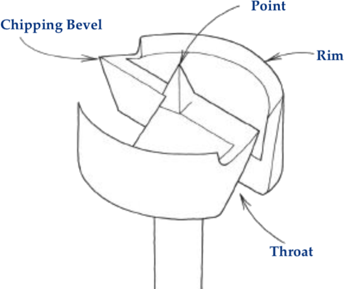

|

Forstner drill bit edges
The absolute best source for sharpening this tool is Leonard Lee's book, The Complete Guide to Sharpening, Chapter 15. (This is a must-have for any sharpener's library.)
Other notes :
- Rims
- Ensure both rims are the same height.
- Rims can be sharpened using a round or half-round file. I have also used a small sanding drum in a Dremel-style device when the drill bit was badly dulled.
- Sharpen the inside of the bevel (nearest the point), and not the outside. Sharpening the outside would reduce the bit's overall diameter.
- Chipping Bevels
- Ensure both chipping bevels are the same height.
- The chipping bevels should be at the same height as the rims. If there is a significant gap, the drill bit should be replaced.
- Sharpen the throat of the bevel using a flat file, and not the other side. Sharpening the side opposite the throat would reduce the chipping bevel's height.
|
It's the little details that make something look handmade.
Unknown
|
- Point
- DO NOT change the center point of the drill bit.
- Grind the minimum off the point.
- Ensure the point extends beyond the rims by at least 0.005".
- DO NOT change the diameter of the drill bit.
|